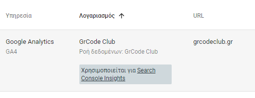

Η σελίδα έχει καταλογοποιηθεί, μέσα από το Αίτημα Δημιουργίας Ευρετηρίου
Στην Google Search Console, ο χάρτης ιστοτόπου (sitemap) χρησιμοποιείται για να βοηθήσει την Google να εντοπίσει και να ευρετηριάσει τις σελίδες του ιστότοπού σας πιο αποτελεσματικά.
Δες εδώ το Sitemap του grcodeclub.gr
Google Search Console: Συνδέεται με το Google Analytics για την παρακολούθηση της οργανικής αναζήτησης.
Το Google Tag Manager (GTM) είναι ένα δωρεάν εργαλείο διαχείρισης ετικετών (tags) που παρέχεται από την Google. Επιτρέπει στους χρήστες να διαχειρίζονται και να αναπτύσσουν διάφορα κομμάτια κώδικα παρακολούθησης (tags) σε έναν ιστότοπο ή μια εφαρμογή χωρίς να χρειάζεται να τροποποιούν απευθείας τον κώδικα του ιστότοπου. Οι ετικέτες μπορεί να περιλαμβάνουν κώδικα για αναλυτικά δεδομένα, διαφημίσεις, pixel παρακολούθησης, και άλλα εργαλεία μάρκετινγκ ή παρακολούθησης.
| Ετικέτα | Τύπος ετικέτας | Κανόνας Ενεργοποίησης |
| C | Google Analytics: Συμβάν GA4 | Τύπος κανόνα ετικέτας: Προβολή σελίδας Κανόνας Ενεργοποίησης: Page URL αρχίζει με https://grcodeclub.gr/c/ |
| CPP | Google Analytics: Συμβάν GA4 | Τύπος κανόνα ετικέτας: Προβολή σελίδας Κανόνας Ενεργοποίησης: Page URL αρχίζει με https://grcodeclub.gr/cpp/ |
| Java | Google Analytics: Συμβάν GA4 | Τύπος κανόνα ετικέτας: Προβολή σελίδας Κανόνας Ενεργοποίησης: Page URL αρχίζει με https://grcodeclub.gr/java/ |
| MainPage | Google Analytics: Συμβάν GA4 | Τύπος κανόνα ετικέτας: Προβολή σελίδας Κανόνας Ενεργοποίησης: Page URL ισούτε με https://grcodeclub.gr/ |
| Network | Google Analytics: Συμβάν GA4 | Τύπος κανόνα ετικέτας: Προβολή σελίδας Κανόνας Ενεργοποίησης: Page URL αρχίζει με https://grcodeclub.gr/network/ |
| Programming | Google Analytics: Συμβάν GA4 | Τύπος κανόνα ετικέτας: Προβολή σελίδας Κανόνας Ενεργοποίησης: Page URL αρχίζει με https://grcodeclub.gr/programming/ |
| Python | Google Analytics: Συμβάν GA4 | Τύπος κανόνα ετικέτας: Προβολή σελίδας Κανόνας Ενεργοποίησης: Page URL αρχίζει με https://grcodeclub.gr/python/ |
| Microsoft Windows | Google Analytics: Συμβάν GA4 | Τύπος κανόνα ετικέτας: Προβολή σελίδας Κανόνας Ενεργοποίησης: Page URL αρχίζει με https://grcodeclub.gr/windows/ |
| Linux | Google Analytics: Συμβάν GA4 | Τύπος κανόνα ετικέτας: Προβολή σελίδας Κανόνας Ενεργοποίησης: Page URL αρχίζει με https://grcodeclub.gr/linux/ |
| Cybersecurity | Google Analytics: Συμβάν GA4 | Τύπος κανόνα ετικέτας: Προβολή σελίδας Κανόνας Ενεργοποίησης: Page URL αρχίζει με https://grcodeclub.gr/cybersecurity/ |
| Click Link | Google Analytics: Συμβάν GA4 | Τύπος κανόνα ετικέτας: Κλικ - Μόνο σύνδεσμοι Κανόνας Ενεργοποίησης: Page URL αρχίζει με https://grcodeclub.gr/ |
| Τύπος | Kατηγόρια | Περιγραφή |
| Συμβάν GA4 | Τύπος ετικέτας | Χρησιμοποιείται για την αποστολή δεδομένων συμβάντων στο Google Analytics 4 (GA4) |
| Κλικ - Μόνο σύνδεσμοι | Τύπος κανόνα ετικέτας | είναι ένας τύπος trigger στο Google Tag Manager (GTM). Αυτό το trigger ενεργοποιεί μια ετικέτα όταν ένας χρήστης κάνει κλικ σε έναν σύνδεσμο σε έναν ιστότοπο. Χρησιμοποιείται συχνά για την παρακολούθηση συγκεκριμένων κλικ σε υπερσυνδέσμους, όπως εξωτερικούς συνδέσμους, κουμπιά που οδηγούν σε διαφορετικές σελίδες ή ενέργειες όπως "κατεβάστε ένα αρχείο". |